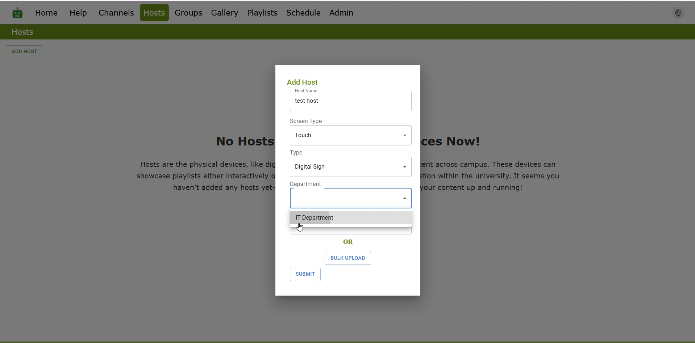
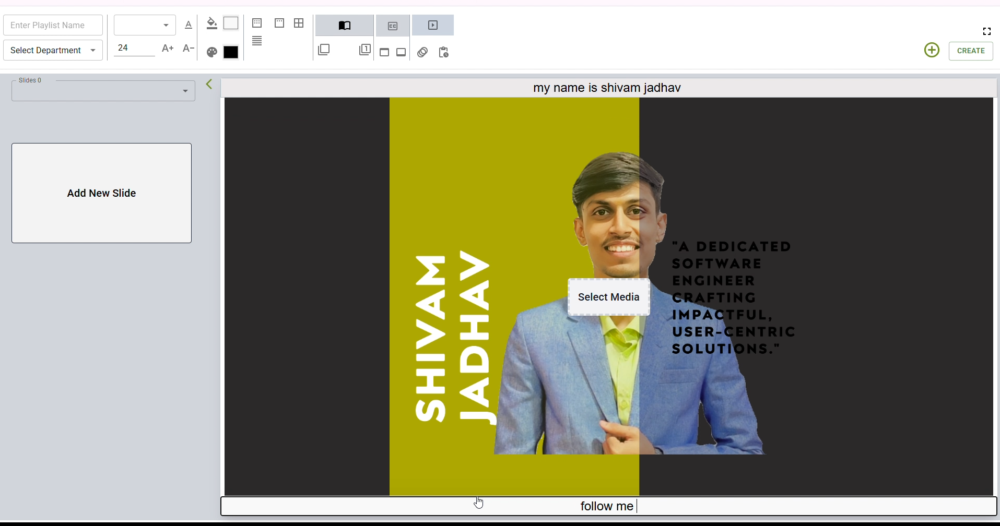
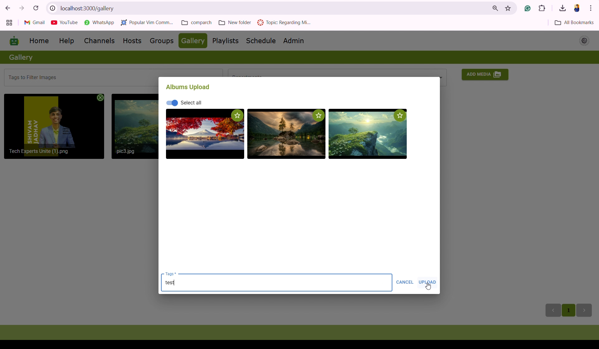
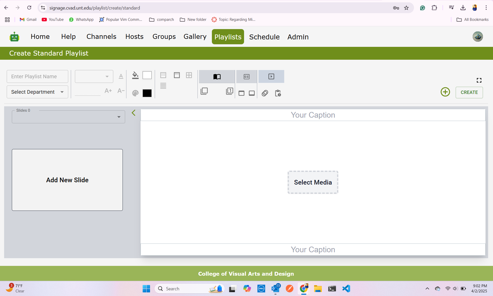
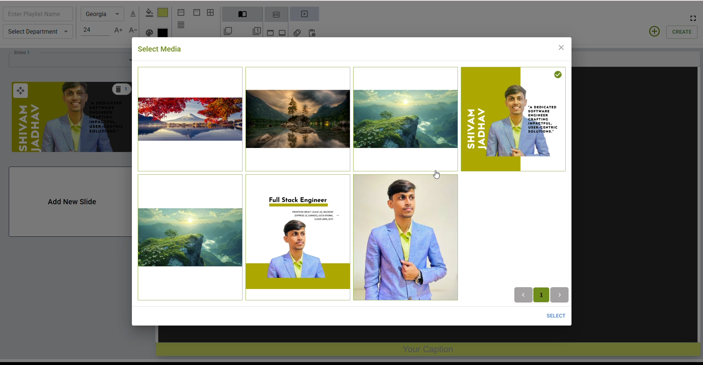
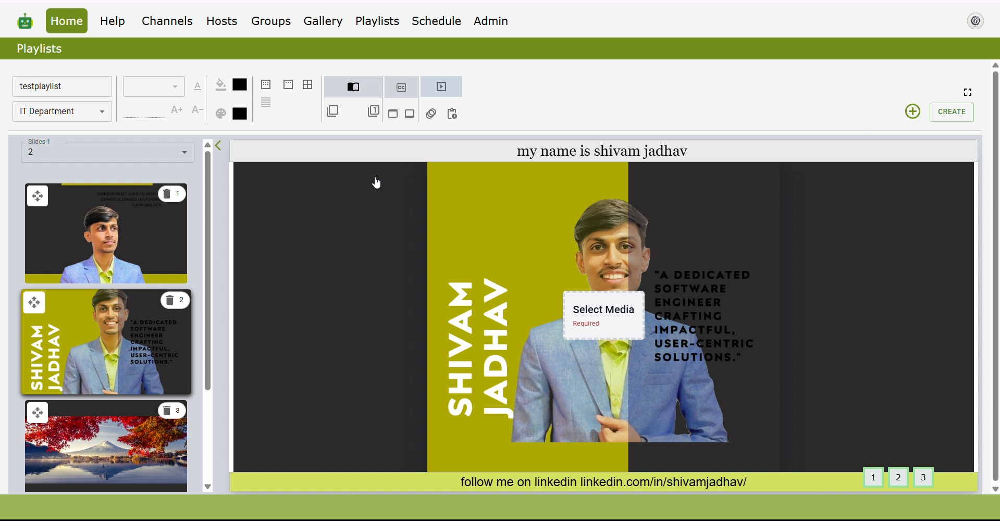

The Universal Digital Signage web application provides a centralized digital signage solution. Images can be uploaded to the server and playlists created online. Playlists can be assigned to individual digital signs (hosts) or managed in groups. Playlist changes can be performed on a schedule with an option to add an interrupt schedule change (temporary change after which the sign or group reverts back to its normal schedule). Other features include interactive playlists: kiosks and presentations.
Designed and deployed a Universal Digital Signage Product and Raspberry Pi Clusters, enhancing university infrastructure and reducing operational costs by $40,000.
Engineered a status-checking system to monitor server uptime, proactively detecting downtime and sending real-time alerts for improved reliability.
Managed server imaging (Ubuntu 24, RAID), SSH, CUDA installations, and full server rack management for AI research, integrating Grafana monitoring.
University of North Texas | Sep 2023 – Present | Denton, Texas, USA





